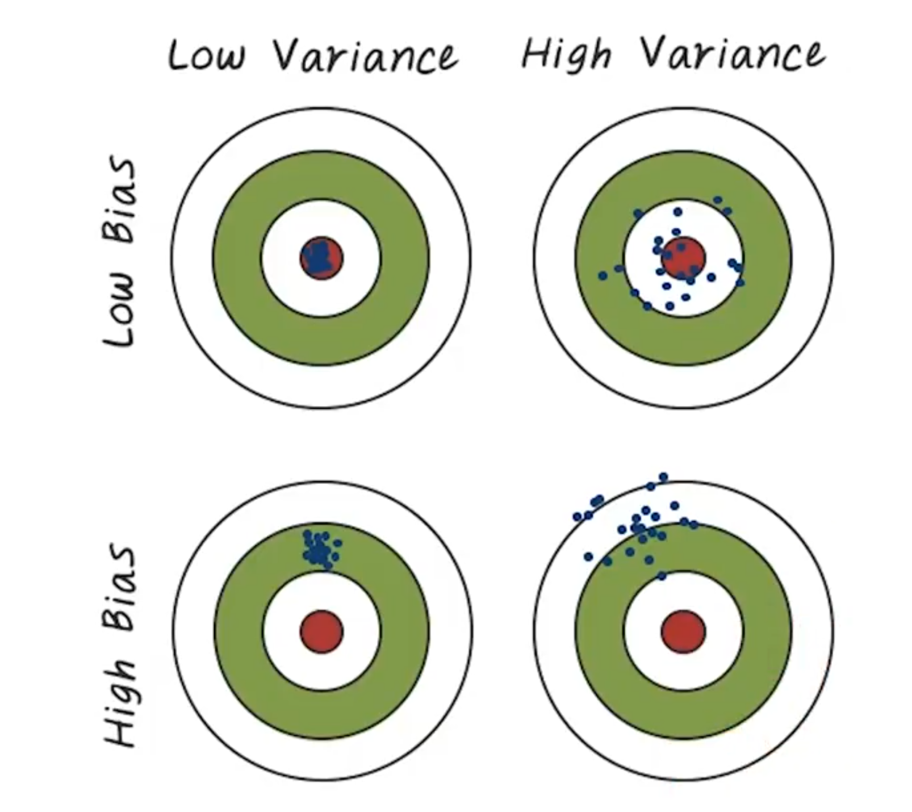
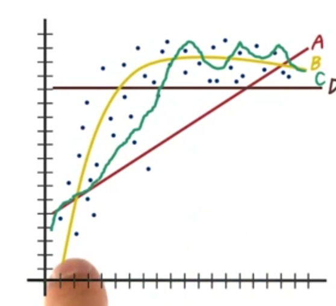
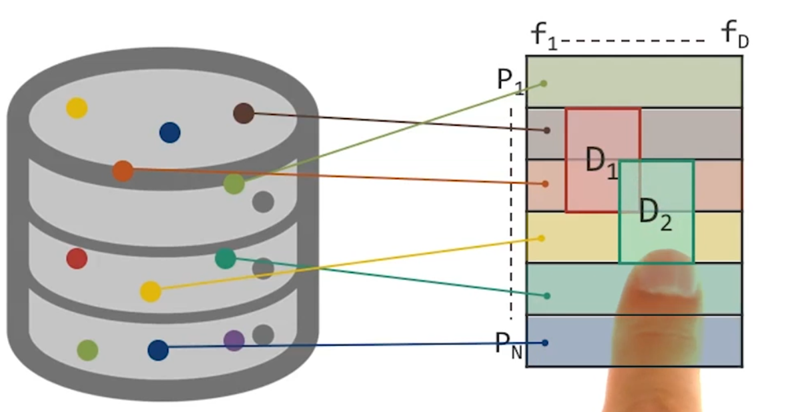
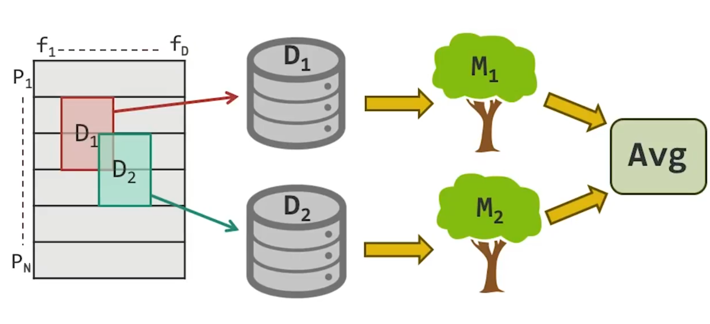
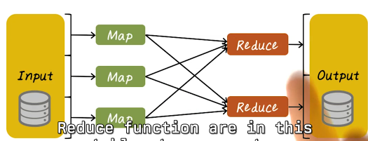
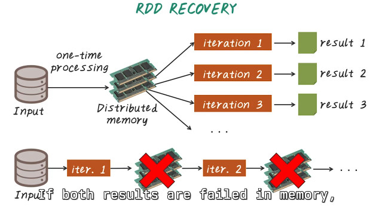
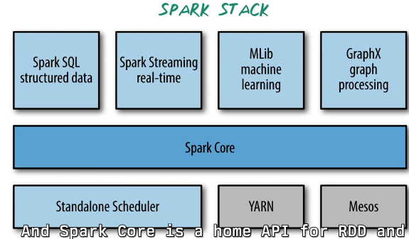
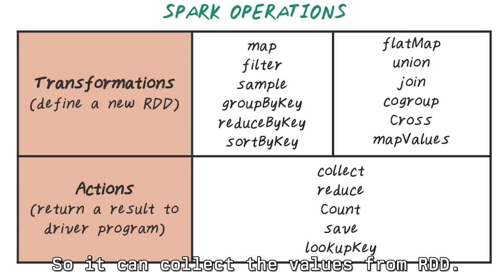

BD4H
Table of Contents
- 1. Introduction to Big Data
- 1.1. Introduction
- 1.2. About BDAH
- 1.3. Learning Goals
- 1.4. Current Problems in Healthcare
- 1.5. The Four Vs
- 1.6. More About The Four Vs
- 1.7. Data Science is Sexy
- 1.8. BDAH Quiz 1 Question
- 1.9. BDAH Quiz 1 Solution
- 1.10. BDAH Quiz 2 Question
- 1.11. BDAH Quiz 2 Solution
- 1.12. BDAH Quiz 3 Question
- 1.13. BDAH Quiz 3 Solution
- 2. Big Data Course Overview
- 2.1. Introduction to Course Overview
- 2.2. Big Data Big Picture
- 2.3. Healthcare Applications
- 2.4. Predictive Modeling Quiz Question
- 2.5. Predictive Modeling Quiz Solution
- 2.6. Predictive Modeling Challenges
- 2.7. Computational Phenotyping
- 2.8. Computational Phenotyping Quiz Question
- 2.9. Computational Phenotyping Quiz Solution
- 2.10. Phenotyping Algorithm
- 2.11. Patient Similarity Quiz Question
- 2.12. Patient Similarity Quiz Solution
- 2.13. Patient Similarity
- 2.14. Algorithms
- 2.15. Systems
- 2.16. Summary
- 3. Predictive Modeling
- 3.1. Introduction to Predictive Modeling
- 3.2. Predictive Modeling vs EHR
- 3.3. Predictive Modeling Pipeline
- 3.4. Prediction Target
- 3.5. Heart Failure Quiz
- 3.6. Motivations for Early Detection
- 3.7. Cohort Construction
- 3.8. Prospective vs. Retrospective Studies
- 3.9. Prospective vs. Retrospective Quiz
- 3.10. Cohort Study
- 3.11. Case-Control Study
- 3.12. Feature Construction
- 3.13. Feature Construction Quizzes
- 3.14. Prediction Performance on Windows
- 3.15. Feature Selection
- 3.16. Predictive Model
- 3.17. Performance Evaluation
- 3.18. Cross-Validation
- 3.19. Conclusion
- 4. MapReduce exam
- 4.1. Introduction to MapReduce
- 4.2. What is MapReduce
- 4.3. Computational Process
- 4.4. Learning Via Aggregation Statistics
- 4.5. MapReduce Abstraction
- 4.6. MapReduce System
- 4.7. MapReduce Fault Recovery
- 4.8. Distributed File Systems
- 4.9. MapReduce Design Choice
- 4.10. Analytics with MapReduce
- 4.11. MapReduce KNN exam
- 4.12. Linear Regression
- 4.13. MapReduce for Linear Regression Quiz Question
- 4.14. MapReduce for Linear Regression Quiz Solution
- 4.15. Limitations of MapReduce exam
- 4.16. MapReduce Summary Quiz Question
- 4.17. MapReduce Summary Quiz Solution
- 5. Classification Model Metrics
- 6. Ensemble methods
- 6.1. Gradient Descent Method (GDM) for Linear Regression
- 6.2. Stochastic Gradient Descent (SGD) Method
- 6.3. SGD for Linear Regression
- 6.4. Ensemble Method Pt 1
- 6.5. Ensemble Method Pt 2
- 6.6. Bias Variance Tradeoff
- 6.7. Bias Variance Tradeoff Quiz Question
- 6.8. Bias Variance Tradeoff Quiz Solution
- 6.9. Bias Variance Tradeoff Quiz 2 Question
- 6.10. Bias Variance Tradeoff Quiz 2 Solution
- 6.11. Bagging
- 6.12. Random Forest exam
- 6.13. Why Bagging Works
- 6.14. Boosting
- 6.15. Bagging vs Boosting Quiz Question
- 6.16. Bagging vs Boosting Quiz Solution
- 6.17. Summary for Ensemble Methods
- 7. Computational Phenotyping
- 7.1. Introduction to Phenotyping
- 7.2. Computational Phenotyping
- 7.3. Phenotyping Algorithm
- 7.4. Applications of Phenotyping
- 7.5. Genomic Wide Association Study
- 7.6. Why Do We Care About Phenotyping
- 7.7. Clinical Predictive Modeling
- 7.8. Pragmatic Clinical Trials
- 7.9. Healthcare Quality Measurement
- 7.10. Phenotyping Methods Part 1
- 7.11. Phenotyping Methods Part 2
- 7.12. Phenotyping Quiz Question
- 7.13. Phenotyping Quiz Solution
- 8. Clustering
- 8.1. Introduction to Clustering
- 8.2. Healthcare Applications
- 8.3. What is Clustering
- 8.4. Algorithm Overview
- 8.5. K Means
- 8.6. K Means Quiz Question
- 8.7. K Means Quiz Solution
- 8.8. Hierarchical Clustering
- 8.9. Agglomerative Clustering
- 8.10. Gaussian Mixture Model
- 8.11. GMM Expectation Maximization exam
- 8.12. GMM Steps
- 8.13. GMM Visual Illustration
- 8.14. K Means Vs GMM exam
- 8.15. Mini Batch K Means
- 8.16. Mini Batch K Means Quiz Question
- 8.17. Mini Batch K Means Quiz Solution
- 8.18. DBScan
- 8.19. DBScan Key Concepts
- 8.20. DBScan Algorithm
- 8.21. DBScan Example
- 8.22. DBScan Quiz Question
- 8.23. DBScan Quiz Solution
- 8.24. Clustering Evaluation Metrics
- 8.25. Rand Index
- 8.26. Mutual Information
- 8.27. Summary of RI and MI
- 8.28. Silhouette Coefficient
- 8.29. Silhouette Coefficient Pros and Cons
- 9. Spark exam
- 9.1. Introduction to Spark
- 9.2. Environment
- 9.3. Motivation
- 9.4. Iteration in Map Reduce
- 9.5. Workload Illustration
- 9.6. Challenge
- 9.7. Solution: RDDs
- 9.8. RDD Recovery
- 9.9. Spark Stack
- 9.10. Spark Programming Interface
- 9.11. RDD Transformations
- 9.12. RDD Transformations Quiz Question
- 9.13. RDD Transformations Quiz Solution
- 9.14. Spark Operations
- 9.15. Shared Variable
- 9.16. Fault Tolerance
- 9.17. Example: Logistic Regression exam
- 9.18. Example: Disease Risk Prediction
- 9.19. Serial ALS
- 9.20. Naive Spark ALS
- 10. Medical Ontology
- 10.1. Introduction to Medical Ontology
- 10.2. Health Data Standards
- 10.3. ICD
- 10.4. ICD 9 to ICD 10 Mapping
- 10.5. ICD 9 Quiz Question
- 10.6. ICD 9 Quiz Solution
- 10.7. ICD Code Quiz Question
- 10.8. ICD Code Quiz Solution
- 10.9. CPT
- 10.10. CPT Code Quiz Question
- 10.11. CPT Code Quiz Solution
- 10.12. LOINC
- 10.13. LOINC Code Quiz Question
- 10.14. LOINC Code Quiz Solution
- 10.15. NDC
- 10.16. NDC Code Quiz Question
- 10.17. NDC Code Quiz Solution
- 10.18. SNOMED
- 10.19. Logical Model of SNOMED CT
- 10.20. SNOMED Example
- 10.21. SNOMED Relationships
- 10.22. SNOMED Design
- 10.23. SNOMED Code Quiz Question
- 10.24. SNOMED Code Quiz Solution
- 10.25. SNOMED Quiz Question
- 10.26. SNOMED Quiz Solution
- 10.27. UMLS
- 10.28. Metathesaurus Concepts
- 10.29. Semantic Network
- 10.30. Specialist Lexicon
- 11. Graph Analysis
- 11.1. Introduction to Graph Analysis
- 11.2. Agenda
- 11.3. PageRank
- 11.4. MapReduce PageRank
- 11.5. PageRank Quiz Question
- 11.6. PageRank Quiz Solution
- 11.7. Spectral Clustering
- 11.8. Similarity Graph Construction
- 11.9. E Neighborhood Graph
- 11.10. K Nearest Neighbor Graph
- 11.11. Fully Connected Graph
- 11.12. E Neighborhood Graph Quiz Question
- 11.13. E Neighborhood Graph Quiz Solution
- 11.14. Spectral Clustering Algorithm
- 11.15. Big Data Conclusion
- 12. Dimensionality Reduction
- 12.1. Introduction to Dimensionality Reduction
- 12.2. Dimensionality Reduction
- 12.3. Singular Value Decomposition
- 12.4. SVD Example
- 12.5. SVD Properties
- 12.6. Quiz SVD Interpretation Question
- 12.7. Quiz SVD Interpretation Solution
- 12.8. Principal Component Analysis
- 12.9. PCA Interpretation
- 12.10. Sparsity Problem with SVD
- 12.11. CUR Decomposition
- 12.12. CUR Algorithm
- 12.13. CUR Quiz Question
- 12.14. CUR Quiz Solution
- 12.15. Tensor for EHR
- 12.16. Tensor Slicing
- 12.17. Rank 1 Tensor
- 12.18. Example Phenotype
- 12.19. Phenotyping Through Tensor Factorization
- 12.20. CP Decomposition
- 12.21. Phenotyping Process Using Tensor Factorization
- 12.22. Phenotyping for Predictive Modeling
- 12.23. Predictive Performance
- 12.24. Major Disease Phenotypes
- 12.25. Tensor vs NMF
- 12.26. Summary Phenotyping Via Tensor Factorization
- 13. Patient Similarity
- 13.1. Introduction to Patient Similarity
- 13.2. Motivation
- 13.3. Traditional Paradigm
- 13.4. New Paradigm
- 13.5. Randomized Clinical Trials
- 13.6. RCT Quiz Question
- 13.7. RCT Quiz Solution
- 13.8. Pragmatic Trials
- 13.9. Pragmatic Trial Quiz Question
- 13.10. Pragmatic Trial Quiz Solution
- 13.11. Utilize Patient Similarity
- 13.12. Patient Similarity Approaches
- 13.13. Patient Similarity Through LSML
- 14. Deep Neural Network
- 14.1. Backward Computation for a Neuron
- 14.2. Sigmoid Function
- 14.3. TANH Function
- 14.4. Rectified Linear Function
- 14.5. Activation Functions_ Summary
- 14.6. Train a Single Neuron
- 14.7. Stochastic Gradient Descent
- 14.8. Forward Computation for a Neuron
- 14.9. Backward Computation for a Neuron
- 14.10. Train a Multilayer Neural Network
- 14.11. Forward Computation Part 1
- 14.12. Forward Computation Part 2
- 14.13. Forward Computation_ Vector Form
- 14.14. Forward Computation_ More General Form
- 14.15. Forward Computation_ Summary
- 14.16. Gradient Descent for Neural Networks
- 14.17. Backward Propagation Part 1
- 14.18. Backward Propagation Part 2
- 14.19. Backward Propagation Part 3
- 14.20. Backward Propagation Part 4
- 14.21. Backward Propagation Part 5
- 14.22. Backward Propagation Part 6
- 14.23. Backward Propagation Summary
- 15. Convolutional Neural Network exam
- 15.1. Convolution Local Networks
- 15.2. Pooling Handling Distortion
- 15.3. Convolutional Neural Networks
- 15.4. Key Stages of CNN
- 15.5. 1-D Convolution
- 15.6. Neural Network for 1-D Convolution
- 15.7. Convolution Layers
- 15.8. Pooling Layers
- 15.9. Dimension Calculation of Convolution Layers
- 15.10. Dimension Calculation of Pooling Layer
- 15.11. Parameter Count
- 15.12. Forward Calculation of Convolution
- 15.13. Forward Calculation of Pooling Layers
- 15.14. Forward Calculation of Fully-Connected Layers
- 15.15. CNN Architectures and Healthcare Applications
- 15.16. Diabetic Retinopathy Diagnosis
- 15.17. Dermatologist Classification of Skin Cancer with DNN
- 16. Recurrent Neural Network
- 17. Focus
1. Introduction to Big Data
1.1. Introduction
- Course: Big Data Analytics for Healthcare (BDAH)
- Instructor: Jimeng Sun, associate professor at Georgia Tech
- Background: Expertise in healthcare analytics and data mining, previous work at IBM TJ Watson Research Center
- Course focus: What students will learn and why it matters
1.2. About BDAH
- Intersection of healthcare and big data
- Covers healthcare applications, data, analytics, and big data processing
- Focus on how data science is applied to healthcare
1.3. Learning Goals
- Understand healthcare data
- Learn analytics algorithms
- Work with big data systems
- Application: Build models for disease risk prediction, treatment recommendation, patient clustering, and similarity analysis
- Assessments: Homework using big data tools, project with system building, report writing, and presentations
1.4. Current Problems in Healthcare
- High costs: $3.8 trillion/year in the U.S.
- Massive waste: $765 billion/year
- Poor quality: 200,000-400,000 preventable deaths annually
- Preventable deaths ranked as the third leading cause of death
- Hope: Big data can improve care and reduce costs
1.5. The Four Vs
- Volume: Large healthcare data amounts
- Variety: Different types of healthcare data sources
- Velocity: Real-time data processing needs
- Veracity: Issues with data quality (noise, missing data, errors)
1.6. More About The Four Vs
- Examples of data volume:
- Genomic data: 200 GB per genome
- fMRI scan: ~300 GB per scan
- US medical imaging data per year: ~100 petabytes
- Data variety:
- Clinical (demographics, diagnosis, procedures, etc.)
- Patient-generated (wearables, sensors)
- Real-time (ICU monitoring data)
- Focus on managing diverse data types in the course
1.7. Data Science is Sexy
- Data science is a critical field
- Harvard Business Review: "Data Scientist, The Sexiest Job in the 21st Century"
- Data scientists:
- Capitalize on big data
- Overcome technical limitations
- Develop key tools like Hadoop and Spark
1.8. BDAH Quiz 1 Question
- True/False: A graduate-level degree is necessary to become a data scientist.
1.9. BDAH Quiz 1 Solution
- Answer: True
1.10. BDAH Quiz 2 Question
- Question: What is the average salary of a data scientist?
1.11. BDAH Quiz 2 Solution
- Answer: $120,000 per year (experienced data scientists earn over $150,000)
1.12. BDAH Quiz 3 Question
- Question: What skills do data scientists need?
1.13. BDAH Quiz 3 Solution
- Answer:
- Math and statistics
- Domain knowledge
- Programming and databases
- Communication and visualization
2. Big Data Course Overview
2.1. Introduction to Course Overview
- Overview of big data analytics for healthcare.
- Topics covered:
- Healthcare applications of big data.
- Algorithms used in applications.
- Software systems for implementation.
- Course structure alternates among these topics.
2.2. Big Data Big Picture
- Course focuses on three key areas:
- Big data systems.
- Scalable machine learning algorithms.
- Healthcare applications.
- Integration of these elements to solve healthcare problems.
2.3. Healthcare Applications
- Three types of healthcare applications:
- Predictive Modeling: Uses historical data to predict future outcomes.
- Computational Phenotyping: Converts electronic health records (EHRs) into meaningful clinical concepts.
- Patient Similarity: Identifies groups of patients with similar characteristics.
- Starts with predictive modeling.
2.4. Predictive Modeling Quiz Question
- Predictive modeling example: predicting treatment effectiveness for epilepsy patients.
- Quiz: Estimate percentage of patients responding to different treatments.
2.5. Predictive Modeling Quiz Solution
- Solution breakdown:
- Group A (responded within 2 years): 32%.
- Group B (responded between 2-5 years): 24%.
- Group C (did not respond after 5 years): 44%.
- Goal of predictive modeling:
- Improve early response rates.
- Identify non-responders for alternative treatments.
2.6. Predictive Modeling Challenges
- Challenges in predictive modeling:
- Handling large patient datasets with various types of data.
- Managing multiple models in a complex computational pipeline.
- Evaluating and comparing multiple predictive pipelines.
2.7. Computational Phenotyping
- Converts raw patient data (e.g., demographics, diagnoses, medications, procedures, lab tests, clinical notes) into clinical concepts or phenotypes.
2.8. Computational Phenotyping Quiz Question
- Identifying data issues in phenotyping.
- Quiz: List potential "waste products" in raw data.
2.9. Computational Phenotyping Quiz Solution
- Common data issues:
- Missing values: Some important data may be absent.
- Duplicates: Patient records may appear multiple times.
- Irrelevant data: Not all raw information is useful.
- Redundant information: Different records may indicate the same condition (e.g., diagnosis and medication for diabetes).
2.10. Phenotyping Algorithm
- Example: Identifying Type 2 Diabetes from EHR data.
- Decision process:
- Check for Type 1 Diabetes diagnosis.
- Check for Type 2 Diabetes diagnosis.
- Verify medication records and abnormal lab results.
- Importance:
- EHR data is often unreliable.
- Multiple data sources improve diagnostic accuracy.
2.11. Patient Similarity Quiz Question
- Different types of reasoning doctors use:
- Flowchart-based reasoning (like phenotyping algorithms).
- Instinct and intuition.
- Case-based reasoning (comparing patients to past cases).
2.12. Patient Similarity Quiz Solution
- Correct answer: Case-based reasoning.
- Doctors often compare current patients to previous similar cases.
2.13. Patient Similarity
- Simulating case-based reasoning using algorithms.
- Process:
- Search for similar patients in a database.
- Identify treatment outcomes for similar cases.
- Recommend best treatment based on historical data.
- Objective: Utilize full database knowledge instead of relying on a single doctor's experience.
2.14. Algorithms
- Introduction to machine learning algorithms in healthcare.
- Covered topics:
- Classification: Mapping patient data to target variables (e.g., predicting heart attack risk).
- Clustering: Grouping similar patients based on health conditions.
- Dimensionality Reduction: Reducing large patient datasets to essential features.
- Graph Analysis: Analyzing relationships between patients and diseases.
2.15. Systems
- Introduction to big data systems for healthcare applications.
- Covered systems:
- Hadoop: Disk-based distributed system.
- Spark: In-memory distributed system (faster than Hadoop).
- Topics include:
- Hadoop infrastructure (MapReduce, HDFS, Pig, Hive, HBase).
- Spark infrastructure (Spark SQL, Spark Streaming, MLlib, GraphX).
2.16. Summary
- Recap of three key areas:
- Healthcare applications.
- Machine learning algorithms.
- Big data systems.
- Course integrates these areas:
- Example: Using logistic regression on Hadoop to predict heart failure.
- Next step: Begin applying concepts.
3. Predictive Modeling
3.1. Introduction to Predictive Modeling
- Predictive modeling
- using historical data to predict future events.
- Example: Using electronic health records (EHR) to model heart failure
- Key Goal: Develop a good predictive model using EHR efficiently.
3.2. Predictive Modeling vs EHR
- Importance: Increased research interest in using EHR for clinical predictive modeling.
- Data Sources: EHR has become a major source for predictive modeling research.
3.3. Predictive Modeling Pipeline
- Predictive modeling is a multi-step computational process:
- Define the prediction target.
- Construct the relevant patient cohort.
- Identify potentially relevant features.
- Select the most relevant features.
- Compute the predictive model.
- Evaluate the predictive model.
- Iterative process until a satisfactory model is obtained.
3.4. Prediction Target
- Investigators may have many targets, but only some are feasible.
- Selection criteria: The target should be interesting and possible with the available data.
- Example: Predicting the onset of heart failure.
3.5. Heart Failure Quiz
- Question: How many new heart failure cases occur annually in the U.S.?
- Options: 17,000; 260,000; 550,000; 1,250,000.
- Answer: 550,000 cases per year.
3.6. Motivations for Early Detection
- Heart failure is complex with diverse symptoms and subsets.
- Early detection can:
- Reduce hospitalization costs.
- Introduce early interventions to slow progression.
- Improve clinical guidelines for heart failure prevention.
3.7. Cohort Construction
- Defines the study population for predictive modeling.
- Study population is a subset of all patients.
- Four study designs based on two axes:
- Prospective vs. Retrospective studies.
- Cohort vs. Case-Control studies.
3.8. Prospective vs. Retrospective Studies
- Prospective Study: Define cohort first, then collect data.
- Retrospective Study: Use existing data from past records.
3.9. Prospective vs. Retrospective Quiz
- Comparison of study properties:
- Retrospective studies have more noise.
- Prospective studies are more expensive and time-consuming.
- Retrospective studies can handle larger datasets.
3.10. Cohort Study
- Includes patients exposed to a particular risk (e.g., heart failure readmission).
- Defines inclusion and exclusion criteria.
3.11. Case-Control Study
- Compares patients with a condition (cases) to similar patients without it (controls).
- Matching criteria: Age, gender, clinic visits.
- Cases are rarer than controls in real-world data.
3.12. Feature Construction
- Defines patient features for predicting outcomes.
- Data sequences from EHR:
- Events (diagnoses, medications, lab results).
- Observation window (used for feature extraction).
- Prediction window (future period to predict).
- Impact of window sizes on model accuracy.
3.13. Feature Construction Quizzes
- Quiz 1: Best timeline for modeling → Large observation, small prediction window.
- Quiz 2: Most useful model → Small observation, large prediction window (ideal but difficult).
3.14. Prediction Performance on Windows
- Prediction Window: Longer window reduces accuracy.
- Observation Window: Longer window improves model performance until plateau.
3.15. Feature Selection
- Identifies relevant features from EHR data.
- EHR provides a large number of potential features (e.g., demographics, vitals).
- Different targets require different feature subsets.
3.16. Predictive Model
- Maps input features to predicted outcomes.
- Regression models for continuous targets (e.g., healthcare costs).
- Classification models for categorical targets (e.g., heart failure).
- Common methods: Logistic regression, decision trees, random forests.
3.17. Performance Evaluation
- Key metric: Testing error (not training error).
- Models must generalize to unseen data.
3.18. Cross-Validation
- Splits data into training and validation sets.
- Common methods:
- Leave-One-Out Cross-Validation.
- K-Fold Cross-Validation.
- Randomized Cross-Validation.
3.19. Conclusion
- Summary of the predictive modeling pipeline:
- Define the prediction target.
- Construct the patient cohort.
- Generate relevant features.
- Select important features.
- Train the predictive model.
- Evaluate model performance.
- Goal: Design high-level predictive modeling studies using EHR data.
4. MapReduce exam
4.1. Introduction to MapReduce
- Overview of MapReduce as a big data processing tool.
- Utilizes distributed computation and storage.
- Covers:
- What MapReduce is
- Fault tolerance in distributed environments
- Analytical use cases and limitations
4.2. What is MapReduce
- Hadoop/MapReduce is:
- A programming model for parallel computation
- An execution environment (Hadoop with HDFS)
- A software package with various tools
- Capabilities:
- Distributed storage via HDFS
- Distributed computation via MapReduce
- Built-in fault tolerance
4.3. Computational Process
- Originated at Google (2004), open-sourced via Apache Hadoop.
- Java-based platform.
- Programming constrained to Map and Reduce functions for scalability.
- Designed for parallel, fault-tolerant processing.
- Emphasis on mastering computational patterns for analytics.
4.4. Learning Via Aggregation Statistics
- Core design: express ML algorithms as aggregation tasks.
- Example: Heart failure risk factor frequency analysis.
- Map: extract risk factors per patient.
- Reduce: aggregate frequencies across population.
- Leads into deeper abstraction needs and trade-offs.
4.5. MapReduce Abstraction
- Example task: count disease cases from patient records.
- Map:
- Emit (disease, 1) for each mention
- Shuffle:
- Group by disease
- Reduce:
- Sum values for each disease
- Emphasizes two-phase logic for scalability.
4.6. MapReduce System
- Real-world data is too large for single machines.
- Data is partitioned and processed by multiple mappers.
- Intermediate results are shuffled and passed to reducers.
- Final results computed from reduce function.
- Three stages:
- Map
- Shuffle
- Reduce
4.7. MapReduce Fault Recovery
- Fault tolerance is a built-in system feature.
- On failure:
- Mappers/reducers are restarted with minimal recomputation.
- Goal: Only failed components are recomputed.
- System handles all failure recovery.
4.8. Distributed File Systems
- HDFS: Hadoop's storage system.
- Splits large files into partitions.
- Partitions stored on multiple machines with redundancy.
- Benefits:
- Faster concurrent access
- Fault tolerance (recover from worker failures)
4.9. MapReduce Design Choice
- Design principle: minimal functionality for reliability and scalability.
- Restricted computation model (e.g., aggregation queries).
- Map: operate on individual records
- Reduce: aggregate results
- Supports straggler mitigation (slow mappers duplicated)
4.10. Analytics with MapReduce
- Application examples:
- K-Nearest Neighbors (KNN)
- Linear Regression
4.11. MapReduce KNN exam
- KNN implementation:
- Map:
- Find K nearest neighbors per partition
- Reduce:
- Combine local results to find global nearest neighbors
- Map:
- Patient data partitioned, processed in parallel
4.12. Linear Regression
- Goal: map patient features to heart disease risk
- Normal equation:
- β = (XᵗX)⁻¹Xᵗy
- MapReduce:
- Map f1: compute xi * xiᵗ
- Map f2: compute xi * yi
- Reduce: aggregate sums
4.13. MapReduce for Linear Regression Quiz Question
- Quiz: specify map/reduce pseudo code for computing Xᵗy
4.14. MapReduce for Linear Regression Quiz Solution
- Solution:
- Map: compute xi * yi
- Reduce: aggregate results
4.15. Limitations of MapReduce exam
- Example: Logistic Regression via Gradient Descent
- Challenge: Requires iterative computation
- Each iteration loads data twice
- MapReduce not efficient for:
- Iterative, multi-stage computation
4.16. MapReduce Summary Quiz Question
- Quiz on ideal conditions for MapReduce:
- Single vs. multiple passes
- Skewed vs. uniform key distribution
- Synchronization needs
4.17. MapReduce Summary Quiz Solution
- Best suited for:
- Single-pass jobs (e.g., histograms)
- Both skewed and uniform key distributions
- Minimal synchronization (only between Map and Reduce phases)
5. Classification Model Metrics
5.1. Predictive Model review
- Predictive model
- mapping function between model inputs and outputs (pred's)
- Model metrics
- needed to know how well they're performing
5.2. Confusion matrix
- True positive/negative also known as "Condition" positive/negative
- Predicted positive/negative also known as "Prediction Outcome" positive/negative
5.3. Accuracy metrics
All divided by ground truth values.
- Accuracy
- (TP+TN)/TP. Not most useful for imbalanced class
- True positive rate
- TP/CP (Sensitivity, Recall)
- False positive rate
- FP/CN
- False negative
- FN/CP
- True negative rate
- TN/CN (Specificity)
5.3.1. Other notes
- FP is a type I error.
- FN is a type II error.
- Hard to perform well on all metrics
- Important to choose the right metrics
5.4. Predictive metrics
All divided by prediction outcomes.
- Prevalence
- CP/Total population. How likely disease occurs in population
- Positive predictive value (Precision)
- TP/Pred outcome positive.
- False discovery rate
- FP/Pred outcome positive
- Negative predictive value
- TN/Pred outcome negative
- False omission rate
- FN/Pred outcome negative
5.5. F1 score
Harmonic mean of PPV and TPR \[ F_1 = 2 \times \frac{PPV \times TPR}{PPV + TPR} \]
5.6. Classifier quiz
Which is the best classifier?
- Highest F1, PPV and Accuracy is the best classifier
5.7. Reversing predictions
It's always possible to reverse the predictions so 0.21 might perform better than 0.69/0.50.
5.8. Receiver operating characteristic
- Predictive models generally output continuous score.
- Threshold is needed as precision bound to force to a certain category
- ROC provides a way to compare performance of classifiers as the decision boundary is varied
- ROC curve is the plot of TP rate vs FP rate at various threshold values
- We sort by prediction score (highest first)
- Use prediction score as threshold values
- Plot on the chart and see how many are misclassified (needs True value to be known)
- AUROC does not depend on the choice of threshold.
- AUROC is the most popular metric for classification
5.9. "Best classifier threshold" quiz
- There isn't a standard answer, it depends on whether TP, TN or other metric is prioritized
5.10. Regression metrics
- MAE
- average of absolute errors, harder to work with since the absolute value is not differentiable
- MSE
- average of squared errors, easier to work with as the derivative of squared term is linear. Increases a lot faster than MAE
- \(R^2\)
- bounded by \((-\infty,1)\). AKA coefficient of determination.
5.10.1. \(R^2\)
\[ R^2 = 1-\frac{\sum_i (y_i - \hat{y}_i)^2}{\sum_i(y_i - \bar{y})^2} \] i.e. 1-MSE/Variance
Negative \(R^2\) values means they perform worse than a simple average of raw data. As noise increases, \(R^2\) decreases.
6. Ensemble methods
6.1. Gradient Descent Method (GDM) for Linear Regression
- Illustrates gradient descent using linear regression.
- Dataset: each row = patient; features in X, outcome Y (e.g., hospital cost).
- Objective: learn linear mapping from features X to outcome Y.
- Assumes Gaussian distribution → log-likelihood leads to squared error minimization.
- Gradient: derived by taking derivative of log-likelihood w.r.t. coefficients β.
- Update rule: move β in direction of gradient with step size η.
- Requires multiple iterations over full dataset → computationally expensive.
6.2. Stochastic Gradient Descent (SGD) Method
- SGD is a scalable variant of gradient descent for large datasets.
- Instead of using full dataset, computes gradients on random subsets (mini-batches).
- One-point update = SGD; larger batches = mini-batch gradient descent.
- Faster per-iteration updates compared to full batch gradient descent.
6.3. SGD for Linear Regression
- Applies SGD to same regression problem.
- Each update uses one patient:
- Compute individual log-likelihood and gradient.
- Update β using gradient.
- More efficient than full gradient computation.
- Key idea: updates based on single or small group of samples.
6.4. Ensemble Method Pt 1
- Ensemble methods combine multiple models for improved performance.
- Can use same (e.g., Random Forest) or different base models.
- Real-world example: Netflix Prize → ensemble models won.
- Many teams merged, forming more powerful ensembles.
6.5. Ensemble Method Pt 2
- General ensemble steps:
- Generate multiple datasets (via bagging or boosting).
- Train separate models on each.
- Aggregate outputs using functions like averaging or weighted sum.
- Outcome: different ensemble strategies.
6.6. Bias Variance Tradeoff
- Key insight: model error = bias² + variance.
- Bias: error from wrong assumptions (e.g., assuming linear when it's not).
- Variance: error from sensitivity to training data.
- Ideal model: low bias and low variance.
- Graphical example: dartboard showing different combinations. 
- As model complexity increases:
- Bias ↓
- Variance ↑
- Total error = minimum at an optimal complexity.
6.7. Bias Variance Tradeoff Quiz Question

- Task: rank four models (flat, linear, smooth curve, wiggly) by complexity.
- A → D: D (flat) < A (linear) < B (curve) < C (wiggly)
6.8. Bias Variance Tradeoff Quiz Solution
- Explanation:
- D: lowest complexity (flat line).
- A: next, simple linear model.
- B: more complex curve.
- C: most complex (wiggly).
6.9. Bias Variance Tradeoff Quiz 2 Question
- Given same models, asked which best fits data.
6.10. Bias Variance Tradeoff Quiz 2 Solution
- Answer: B (smooth curve)
- Balances bias and variance well.
6.11. Bagging
- Bagging = Bootstrap Aggregation.
- Method:
- Sample data with replacement.
- Train models on each sample.
- Combine predictions via majority vote or averaging.
- Reduces variance of the final model.
6.12. Random Forest exam
- Special case of bagging with decision trees.  
- Steps:
- Randomly sample both rows (patients) and columns (features).
- Train simple decision trees on these subsets.
- Final prediction = average of all trees.
- Simple trees help maintain diversity and lower computation.
6.13. Why Bagging Works
- Reduces variance without increasing bias.
- Variance reduction from averaging independent model predictions.
- Based on statistical principle: variance of mean = variance / \(T\) for \(T\) models, assuming the resulting bootstrap samples are close to i.i.d.
6.14. Boosting
- Builds models sequentially.
- Each new model focuses on mistakes of previous ones.
- Final model = weighted combination of all models.
- Pros: better accuracy.
- Cons: prone to overfitting vs bagging.
- Example: AdaBoost is most popular.
6.15. Bagging vs Boosting Quiz Question
- Quiz to compare characteristics:
- Combination method (simple vs weighted average)
- Parallelism
- Noise sensitivity
- Accuracy
6.16. Bagging vs Boosting Quiz Solution
- Bagging:
- Simple average, parallel-friendly, less sensitive to noise, reliable accuracy (good in all cases).
- Boosting:
- Weighted average, sequential (hard to parallelize), sensitive to noise, potentially higher accuracy but less reliable.l
- Analogy:
- Bagging = reliable Japanese car.
- Boosting = high-performance but risky sports car.
6.17. Summary for Ensemble Methods
- Pros:
- Simple, flexible, few parameters, theoretical backing.
- Cons:
- Computational cost (training + inference).
- Harder interpretation (due to model complexity).
7. Computational Phenotyping
7.1. Introduction to Phenotyping
- Introduction to clustering in healthcare, specifically "phenotyping".
- Phenotypes refer to diseases or conditions; known phenotypes exist, but many more are undiscovered.
- Computational phenotyping helps discover novel phenotypes using available data.
- Applications include disease diagnosis, cost prediction, readmission risk, and genomic studies.
7.2. Computational Phenotyping
- Converts raw EHR data into meaningful phenotypes using algorithms.
- EHR data includes demographics, diagnosis codes, medications, procedures, labs, notes.
- Challenges:
- Noisy and incomplete data esp. raw data.
- Primarily designed for clinical use, not directly for supporting research.
- Redundancy across data sources.
- Goal: derive research-grade phenotypes from raw clinical data.
7.3. Phenotyping Algorithm
- Example: Type 2 diabetes phenotyping algorithm.
- Sequential logic:
- Exclude Type 1 diagnosis.
- Check for Type 2 diagnosis.
- Check medication and lab results.
- Multiple confirmation paths possible.
- Developed manually by clinical experts.
7.4. Applications of Phenotyping
- Genomic studies: link genomic and phenotypic data.
- Clinical predictive modeling: forecast disease onset, hospitalizations.
- Pragmatic clinical trials: assess treatment effectiveness in real-world settings.
- Healthcare quality measurement: compare care quality across institutions.
- All rely on robust phenotyping algorithms.
7.5. Genomic Wide Association Study
- GWAS scans SNPs to associate genetic variations with diseases.
- Steps:
- Identify phenotypes.
- Divide subjects into cases/controls.
- Collect DNA and scan for SNPs.
- Calculate odds ratios and p-values.
- Statistically significant SNPs may indicate disease relevance.
- High-quality phenotyping critical for accurate GWAS.
7.6. Why Do We Care About Phenotyping
We need rich and deep phentotyping to analyze genomic data.
- Genomic data is rapidly becoming cheaper and more abundant.
- Phenotypic data remains complex and costly to acquire.
- Demand for better phenotyping algorithms to support scalable, high-quality genomic research.
7.7. Clinical Predictive Modeling
- Predictive modeling using raw EHR data is problematic (noise, complexity, lack of portability).
- Phenotyping transforms raw data into simpler, meaningful concepts.
- Benefits:
- Better model accuracy.
- Easier interpretation.
- Generalizability across hospitals/settings (input data schemas may be different).
7.8. Pragmatic Clinical Trials
- Traditional vs. pragmatic trials:
- Traditional: controlled, single condition/drug, strict selection, randomized.
- Pragmatic: real-world, multiple conditions/drugs, minimal selection, often not randomized.
- High-quality phenotyping essential for identifying patient conditions and treatments in pragmatic settings.
7.9. Healthcare Quality Measurement
- Challenge: hospitals use diverse EHR formats.
- Centralized processing of raw data is complex.
- Solution: local phenotyping at hospitals → send standardized phenotype data to central site.
- Enables scalable and fair quality comparison across institutions.
7.10. Phenotyping Methods Part 1
- Two main approaches:
- Supervised learning: uses labeled data (function approximation).
- Unsupervised learning: identifies patterns/structures without labels (description/summarization).
- Illustrative examples and playful dialogue explore these ideas in depth.
7.11. Phenotyping Methods Part 2
- Supervised: expert-defined rules (Boolean logic, decision trees), or machine learning classifiers.
- Pros: interpretable, low validation effort.
- Cons: high development cost, not good for unknown phenotypes, potential poor transferability.
- Unsupervised: clustering, dimensionality reduction.
- Pros: less manual effort, no need for labels.
- Cons: hard to validate, large data requirements.
7.12. Phenotyping Quiz Question
- Quiz:
- Which approach requires more human effort during evaluation?
- Which is easier to interpret?
- Choices: expert-defined rules vs. classification models.
7.13. Phenotyping Quiz Solution
- Answer:
- Classification models require more evaluation effort (need more labeled data).
- Expert-defined rules are easier to interpret (clinician-derived, intuitive).
8. Clustering
8.1. Introduction to Clustering
- Introduction of clustering as a method distinct from classification.
- Classification: Grouping by known labels.
- Clustering: Discovering groups from raw data.
- Topics covered:
- Definition of clustering.
- Algorithms: K-means, Gaussian Mixture Models (GMM).
- Scalable algorithms for large datasets.
- Applications in healthcare.
8.2. Healthcare Applications
- Clustering in healthcare:
- Patient stratification: group patients with similar characteristics.
- Disease hierarchy discovery: learn structure/relationships among diseases.
- Phenotyping: convert raw data into meaningful phenotypes (clinical concepts).
- Phenotypes = clusters of similar patients.
8.3. What is Clustering
- Clustering explained via patient-disease matrix:
- Rows = patients, Columns = diseases.
- Apply clustering to rows → patient clusters (e.g., P1, P2, P3).
- Apply clustering to columns → disease clusters (e.g., D1, D2, D3).
- Supports applications like phenotyping and disease discovery.
8.4. Algorithm Overview
- Two categories of clustering algorithms:
- Classical: K-means, Hierarchical, Gaussian Mixture Model.
- Scalable: Mini-batch K-means, DBSCAN.
8.5. K Means
- Hard cluster (every data point belongs to one cluster)
- Inputs: data points X₁ to Xₙ, number of clusters K.
- Outputs: K clusters S₁ to Sₖ.
- Objective: Minimize distance of data points to cluster centers (µᵢ).
- Algorithm steps:
- Initialize K centers.
- Assign points to nearest center.
- Update centers based on mean of assigned points.
- Repeat until convergence.
- Example illustrated using \(K=2\).
8.6. K Means Quiz Question
- Quiz: Given n, k, d (dimensions), i (iterations), what's the complexity?

8.7. K Means Quiz Solution
- Complexity: O(n × k × d × i)
- Cost driven by assignment and update operations.
8.8. Hierarchical Clustering
- Hard cluster (every data point belongs to one cluster)
- Builds a hierarchy of data points.
- Two approaches:
- Agglomerative (bottom-up): Merge smallest clusters until one remains.
- Divisive (top-down): Split one big cluster into smaller ones.
- Agglomerative (bottom up) is more efficient and more commonly used.
8.9. Agglomerative Clustering
- Steps:
- Compute n×n distance matrix.
- Initialize each point as its own cluster.
- Iteratively merge 2 closest clusters and update distance matrix.
- Stop when one cluster remains (produces a hierarchy).

8.10. Gaussian Mixture Model
- Soft clustering: points belong to multiple clusters with probabilities.
- Each cluster is a Gaussian (normal distribution).
- Parameters:
- mean
- µₖ
- variance
- σₖ
- mixing coefficient
- πₖ
- Goal: Estimate GMM parameters from data.
\[ p(X) = \sum_{k=1}^{K} \pi_k \, N(X | \mu_k, \Sigma_k) \]
8.11. GMM Expectation Maximization exam
- Uses Expectation-Maximization (EM) algorithm:
- Initialize parameters.
- E-step: Compute assignment scores (γₙₖ).
- M-step: Update parameters using γₙₖ.
- Iterate until convergence.
8.12. GMM Steps
- Details of EM:
- Initialization: K-means can be used for better results.
- E-step: Compute γₙₖ using cluster probabilities.
- M-step:
- Compute cluster size (Nₖ), mean (µₖ), covariance (σₖ), mixing coefficient (πₖ).
- Inefficient choice of start points will result in more iterations before convergence.
8.13. GMM Visual Illustration
- Visual demo of GMM clustering.
- Iteratively updates Gaussians until convergence.
- Final model reflects soft cluster assignments.
8.14. K Means Vs GMM exam
- Comparison:
- K-means: hard assignment, single center (µₖ).
- GMM: soft assignment, parameters include µₖ, σₖ, πₖ.
- Both use iterative updates.
8.15. Mini Batch K Means
- Scalable version of K-means.
- Works with small batches (M) instead of full dataset.
- Updates centers incrementally.
- Cache the center
- Increment center count
- Set step size
- Update c. Center is eventually stabilized.
- Reduces computational cost for large data.
8.16. Mini Batch K Means Quiz Question
- Quiz: Given the following, compute complexity.
- k
- number of clusters
- t
- iterations
- b
- batch size
- d
- number of dimensions
8.17. Mini Batch K Means Quiz Solution
- Complexity: O(t × b × k × d)
8.18. DBScan
- Density-Based Spatial Clustering of Applications with Noise.
- Clusters = dense areas, separated by sparse regions.
- Can identify clusters of arbitrary shape.
- Effective for noisy data.
8.19. DBScan Key Concepts
- Density = number of points within ε-distance.
- Dense region: point in area >= MinPoints.
- Key concepts:
- Core points
- high-density.
- Border points
- near core points.
- Noise
- not in dense region.
8.20. DBScan Algorithm
- Steps:
- Build graph connecting core points to neighbors.
- Identify connected components as clusters.
- Remove clustered points and repeat.
8.21. DBScan Example
- Visual example: finds 6 clusters, some noise points remain.
8.22. DBScan Quiz Question
- Quiz: How many clusters can a point belong to in DBSCAN?
8.23. DBScan Quiz Solution
- Answer: 0 or 1 (noise = 0, core/border = 1)
8.24. Clustering Evaluation Metrics
- Metrics:
- Rand Index (RI)
- Mutual Information (MI)
- Silhouette Coefficient
8.25. Rand Index
- Requires ground truth.
- Measures agreement between predicted and true clusters.
- RI = (number of correct pairs) / (total pairs)
- Value between 0 (bad) and 1 (perfect).
8.26. Mutual Information
- Requires ground truth.
- From information theory: measures shared info between predicted and true clusters, using joint probability of x and y.
- Normalized Mutual Information (NMI) between 0 and 1 by dividing with sqrt of entropy of \(x\) × entropy of \(y\).
8.27. Summary of RI and MI
- Pros of both:
- Bounded values, interpretable.
- No assumptions about cluster shapes.
- Cons of both:
- Require ground truth, which may be unavailable.
8.28. Silhouette Coefficient
- Measures how similar a point is to its own cluster vs. others.
- Formula: \((b - a) / max(a, b)\)
- a: Find the average distance of \(x\) to all the points in its cluster.
- b: Find the average distance of \(x\) to all the points not in its cluster.
- Does not require ground truth.
8.29. Silhouette Coefficient Pros and Cons
- Range: -1 (bad) to 1 (good), 0 = overlapping clusters.
- Assumes spherical clusters → less effective for complex shapes (e.g. DBSCAN).
9. Spark exam
9.1. Introduction to Spark
- Spark is introduced as an alternative to MapReduce, better suited for iterative workloads.
- Leverages distributed memory across machines.
- Core concept: Resilient Distributed Dataset (RDD).
- Promotes efficiency for machine learning and healthcare applications.
9.2. Environment
- Big data analytics typically run in data centers or cloud platforms like AWS, GCP, Azure.
- Environment includes interconnected racks of servers.
- Context set to understand the need for systems like Spark.
9.3. Motivation
- Hadoop & MapReduce explained with acyclic data flow using stable storage. 
- Strength: fault-tolerance via disk storage.
- Weakness: inefficiency with iterative or interactive workloads (e.g. ML, graph analysis).
- Need for in-memory computation system like Spark.
9.4. Iteration in Map Reduce
- Machine learning models need repeated computation.
- Hadoop repeatedly reads/writes from disk, causing inefficiency.
- Highlights the need for in-memory operations.
9.5. Workload Illustration
- Iterative workloads: same computation on same data (e.g., model training).
- Interactive workloads: varying computations on evolving data (e.g., data exploration).
- Key: keep working sets in memory for speed.
9.6. Challenge
- Challenge: memory is not fault-tolerant.
- Existing storage abstractions rely on fine-grained updates, which are expensive to track.
- Examples: databases, key-value stores, distributed memory.
- These require replicating data or logs across nods for fault tolerance.
- Need for a better balance between efficiency and fault tolerance.
9.7. Solution: RDDs
- Spark uses RDDs to balance fault-tolerance and efficiency.
- RDDs support coarse-grained transformations (e.g., map, group-by, join).
- Coarse-grained = performed on entire dataset instead of specific parts of the dataset.
- Lineage tracking enables fault recovery without excessive replication.
- If failure happens, Spark recomputes the coarse-grained operations.
- No cost if nothing fails.
- Definition
- RDD
- Resilient Distributed Dataset
9.8. RDD Recovery

- Recovery through recomputation based on lineage.
- Interactive: rerun only failed iterations.
- Iterative: reload or recompute chunks from previous iterations.
- Spark is a big-data system built on top of RDDs.
9.9. Spark Stack

- Core: scheduling, memory management, fault recovery.
- APIs: Spark SQL, Streaming, MLib (ML), GraphX.
- Compatible with YARN, Mesos, or standalone.
9.10. Spark Programming Interface
- Interfaces: Scala, Python, Java.
- RDD operations: transformations and actions.
- Support for shared variables (broadcast, accumulator).
9.11. RDD Transformations
- Examples: map vs flatMap, distinct, union, intersection, subtract.
- flatMap flattens nested lists from map.
- Often want `flatMap` instead to get everything in 1 single flat list, instead of lists of lists.
- Distinct, union are relatively cheap.
- Intersection and subtract are more costly due to set operations (distinct, combining, sorting, etc).
9.12. RDD Transformations Quiz Question
- Quiz: Apply map and filter on input RDD to understand transformation output.
9.13. RDD Transformations Quiz Solution
- Map squares each number: [1, 4, 9, 16].
- Filter excludes ‘1’: resulting in [2, 3, 4].
9.14. Spark Operations

- Transformations: map, filter, groupByKey, etc.
- Actions: reduce, collect, count, etc.
- Broader set than Hadoop MapReduce.
9.15. Shared Variable
- Broadcast variables: efficient read-only shared data.
- Example Spark job with clinical notes:
- Load data → filter → split → cache.
- Perform actions like counting specific symptoms (e.g., fever, cough).
- Benefits from caching and distributed execution.
9.16. Fault Tolerance
- RDD tracks transformations (lineage).
- Lost partitions can be recomputed using lineage.
- Visuals: sequence of filters and maps reconstruct lost data.
9.17. Example: Logistic Regression exam
- Spark efficiently supports logistic regression via iteration.
- Data cached in memory → quick updates.
- Uses map + reduce to compute gradient.
- Spark (6s/iter) is much faster than Hadoop (127s/iter) for this use case.
9.18. Example: Disease Risk Prediction
- Predict patient disease risks using collaborative filtering.
- Matrix R = patient × disease.
- ALS algorithm: alternates updating patient and disease features.
- Definition:
- ALS
- Alternating least squares
9.19. Serial ALS
- Serial implementation of ALS.
- Iterative updates of A (patient) and B (disease) matrices.
- Uses map functions over patient/disease ranges.
9.20. Naive Spark ALS
- Parallel ALS using
spark.parallelize. - Broadcast used for efficient data sharing.
- Broadcast improves performance 3× over naive version.
10. Medical Ontology
10.1. Introduction to Medical Ontology
- Healthcare benefits from structured medical knowledge.
- Ontologies and knowledge graphs are common in this domain.
- Historically, healthcare has developed ontologies for:
- Diseases
- Medical procedures
- Medications
- Lab tests
- Ontologies aid understanding of healthcare data and validate data models.
- The lesson discusses various ontologies and their role in analytics.
10.2. Health Data Standards
- Overview of major health data standards:
- LOINC: Lab test codes
- ICD: Diagnostic codes
- CPT: Procedure codes
- NDC: Medication codes
- SNOMED: A comprehensive ontology integrating all the above.
- UMLS: Software system that accesses integrated medical knowledge.
- Use case: Patient encounter example illustrating all standard usages.
- Importance:
- Insurance claim processing
- Research and data analysis
- Preview of upcoming detailed discussions on individual standards.
10.3. ICD
- ICD = International Classification of Diseases.
- Developed by WHO, categorizes diseases.
- ICD-9: 17,000+ codes; 3-5 digits; includes main and supplementary categories (e.g., E, V codes).
- ICD-10: 141,000+ codes; 7-character alphanumeric structure.
- Detailed coding for category, etiology, body part, severity, and extension.
- Examples:
- ICD-9: 250.01 = Type 1 diabetes, no complications
- ICD-10: M1A.31X2 = Chronic gout with renal impairment in left shoulder, no tophus
10.4. ICD 9 to ICD 10 Mapping
- Mapping is mostly one-to-many due to ICD-10's higher specificity.
- Some mappings are one-to-one (e.g., Tietze's Syndrome).
- Complicated mappings: e.g., ICD-9 code maps to 2,530 ICD-10 codes.
- Complexity highlights the increased detail of ICD-10.
10.5. ICD 9 Quiz Question
- Identifies valid and invalid ICD-9 codes.
10.6. ICD 9 Quiz Solution
- Valid: 501, 802.3, V70, E820.0
- Invalid: U80.1, 5A0.01
10.7. ICD Code Quiz Question
- Task: Find ICD-9 and ICD-10 codes for Influenza.
10.8. ICD Code Quiz Solution
- ICD-9: 487.1
- ICD-10: J11.1
10.9. CPT
- CPT = Current Procedural Terminology (US standard).
- Used for medical, surgical, diagnostic procedures.
- Maintained by the AMA.
- Key in insurance reimbursement.
- Categories:
- Category 1: Common procedures (e.g., surgery, radiology)
- Category 2: Quality metrics
- Category 3: Experimental procedures (e.g., codes ending in T)
10.10. CPT Code Quiz Question
- Task: Find CPT code for detailed office visit.
10.11. CPT Code Quiz Solution
- Office visit range: 99201–99205
- Time-based codes (e.g., 99201 = 10 mins, 99205 = 1 hour)
10.12. LOINC
- LOINC = Logical Observation Identifiers Names and Codes.
- Created by Regenstrief Institute.
- Standard for lab tests and clinical observations.
- Example: 2865-4 = a specific lab test
- Attributes:
- Component
- Property
- Time aspect (e.g., Pt = point in time)
- Sample type
- Scale (quantitative, ordinal, etc.)
- Method
10.13. LOINC Code Quiz Question
- Task: Find LOINC code for Creatinine lab test.
10.14. LOINC Code Quiz Solution
- Answer: 2160-0
10.15. NDC
- NDC = National Drug Code (for medications).
- Maintained by the FDA.
- Structure: 3 segments
- Labeler code (company)
- Product code (drug type)
- Package code (package details)
- Different digit combinations exist but total is 10 digits.
10.16. NDC Code Quiz Question
- Task: Find NDC code for metformin hydrochloride, 500mg.
10.17. NDC Code Quiz Solution
- Example code: 0093-7214-01 (labeler-dependent)
10.18. SNOMED
- SNOMED = Systematized Nomenclature of Medicine.
- Maintained by IHTSDO (Denmark).
- Supports clinical documentation and semantic interoperability.
- National editions and implementation subsets exist.
- Broad user base: clinicians, researchers, analysts.
10.19. Logical Model of SNOMED CT
- Core components:
- Concepts (with unique ID)
- Descriptions (FSN and synonyms)
- Relationships (e.g., “is a”, attributes)
10.20. SNOMED Example
- Example concept: 22298006 = Myocardial infarction disorder
- Multiple descriptions including synonyms
- Preferred vs. acceptable terms are defined by reference sets.
10.21. SNOMED Relationships
- “Is a” relationship creates concept hierarchies.
- Example: Cellulitis of foot “is a” cellulitis, and “is a” disorder of foot.
- Relationships are directional and acyclic.
10.22. SNOMED Design
- 19-level hierarchy of concepts.
- Concepts range from general to highly specific.
- Relationships include “is a” and others with attributes.
- Each concept has a unique ID and descriptions.
10.23. SNOMED Code Quiz Question
- Task: Find SNOMED code for chronic gouty arthritis.
10.24. SNOMED Code Quiz Solution
- Answer: 68451005
10.25. SNOMED Quiz Question
- Question: What is the structure of "is a" relationships in SNOMED?
10.26. SNOMED Quiz Solution
- Answer: Directed acyclic graph (not a tree).
10.27. UMLS
- UMLS = Unified Medical Language System.
- Maintained by US National Library of Medicine.
- Integrates multiple standards into a unified system.
- Components:
- Metathesaurus
- Semantic network
- Specialist lexicon and tools
10.28. Metathesaurus Concepts
- Concept hierarchy:
- Atom (AUI) → String (SUI) → Term (LUI) → Concept (CUI)
- Multiple ontologies/sources integrated.
10.29. Semantic Network
- 135+ semantic types (e.g., diseases, drugs)
- 54+ semantic relationships (e.g., cause, treat)
- Organizes concepts and their interrelations.
10.30. Specialist Lexicon
- Lexicon of 300,000+ biomedical terms.
- Includes syntax, morphology, orthography.
- Used in NLP tools like MetaMap and MMTx.
11. Graph Analysis
11.1. Introduction to Graph Analysis
- Overview of graph analysis and its applications.
- Used in search engines, social networks, and healthcare.
- Identifies clusters of related entities (webpages, patients, conditions).
- Will cover similarity graphs and spectral clustering.
11.2. Agenda
- Two main graph-based algorithms introduced:
- PageRank: Ranks nodes in a directed graph based on importance.
- Spectral Clustering: A graph partitioning-based clustering algorithm.
11.3. PageRank
- Developed by Google co-founders for webpage ranking.
- Traditional content-based ranking is prone to spam.
- PageRank relies on the graph structure (links between pages).
- Intuition: More high-quality pages linking to a page → higher rank.
- Represent graph using an adjacency matrix:
- Normalize matrix rows to represent transition probabilities.
- PageRank computed using recursion: browsing + teleporting.
- Browsing redistributes rank via adjacency matrix; teleporting randomly jumps.
- Equation: `q = cAq + (1 - c)e/N`, where `c` is damping factor (e.g., 0.85).
- Next steps: Implement PageRank using big data systems like Hadoop MapReduce.
11.4. MapReduce PageRank
- Implementation of PageRank in MapReduce:
- Map Phase:
- Emit current page and its PageRank.
- Distribute PageRank to each outgoing link equally.
- Reduce Phase:
- Aggregate partial PageRanks from map phase.
- Add teleporting component.
- Emit updated PageRank.
- Hadoop shuffles partial sums to reducers.
- Iterative process: repeat map-reduce steps to converge.
- Map Phase:
11.5. PageRank Quiz Question
- Quiz: Rank webpages in a directed graph by PageRank (based on structure).
11.6. PageRank Quiz Solution
- Highest: YouTube (3 incoming links).
- Lowest: Google (no incoming links).
- Recursive PageRank shows differences despite similar local structures.
- Amazon > Wikipedia > Facebook in mid-tier due to recursion effects.
11.7. Spectral Clustering
- Spectral Clustering vs Traditional Clustering:
- Uses similarity graph of patients based on features.
- Steps:
- Construct similarity graph (nodes = patients, edges = similarity).
- Convert graph to adjacency matrix.
- Compute top-k eigenvectors of the matrix.
- Cluster eigenvectors into groups.
- Effective for high-dimensional or noisy data.
11.8. Similarity Graph Construction
- Several ways to construct similarity graphs:
- Epsilon-neighborhood.
- K-nearest neighbors.
- Fully connected with edge weights (e.g., Gaussian kernel).
- Purpose: capture local similarity between patients.
11.9. E Neighborhood Graph
- Connect nodes within ε distance.
- No edge if distance > ε.
- Defines sparsity based on ε.
11.10. K Nearest Neighbor Graph
- Each node connects to its k-nearest neighbors (directed).
- Results in sparse graphs for small k.
- Variants: binary edges vs weighted edges based on distance.
11.11. Fully Connected Graph
- Every node connected to every other.
- Edge weights determined by similarity (e.g., Gaussian kernel).
- Most dense graph representation.
11.12. E Neighborhood Graph Quiz Question
- Quiz: Select best ε value to reflect clustering structure in 2D patient data.
11.13. E Neighborhood Graph Quiz Solution
- Small ε: too many disconnected clusters.
- Large ε: single cluster.
- Optimal ε (e.g., B or C) reveals natural clusters in data.
11.14. Spectral Clustering Algorithm
- Variations exist:
- Unnormalized vs Normalized Spectral Clustering.
- Example: simplest uses eigenvectors + k-means.
- Spectral clustering transforms data to eigenspace where clusters are clearer.
- Recommended reading for theoretical underpinnings.
11.15. Big Data Conclusion
- Wrap-up of the video series.
- Presenter: Jimmy Son.
12. Dimensionality Reduction
12.1. Introduction to Dimensionality Reduction
- Overview of dimensionality reduction as a method for simplifying noisy, high-dimensional data.
- Methods covered:
- Singular Value Decomposition (SVD)
- Principal Component Analysis (PCA)
- CUR Decomposition
- Tensor Factorization
- Applications in predictive modeling and healthcare phenotyping.
12.2. Dimensionality Reduction
- Recap of clustering algorithms (hard, soft, and scalable).
- Motivation for dimensionality reduction: efficiency and robustness.
- Classical methods:
- SVD and PCA: summarize features via linear combinations.
- CUR: uses actual data rows/columns, preserves sparsity.
- Introduction to Tensor Factorization for higher-order data.
12.3. Singular Value Decomposition
- Definition: SVD decomposes a matrix X into U, Σ, Vᵗ.
- U and V: orthogonal matrices (singular vectors).
- Σ: diagonal matrix with singular values (in descending order).
- Visual interpretation with patients (rows) and diseases (columns).
12.4. SVD Example
- Spectral view: rank-1 approximations via σᵢUᵢVᵢᵗ.
- Example with documents and terms:
- CS vs. Medical documents.
- Each rank-1 component captures topic-specific vocabulary.
12.5. SVD Properties
- V: eigenvectors of XᵗX with eigenvalues Σ².
- U: eigenvectors of XXᵗ.
- Reinforces relationship between SVD and eigen-decomposition.
12.6. Quiz SVD Interpretation Question
- Question about AᵗA matrix from a document-term matrix.
12.7. Quiz SVD Interpretation Solution
- Answer: AᵗA is a term-to-term similarity matrix.
12.8. Principal Component Analysis
- PCA is derived from SVD: UΣ = principal components, Vᵗ = loadings.
- Visualized with a patient-by-disease matrix.
- Principal components capture the main variance direction.
12.9. PCA Interpretation
- PCA reduces dimensions by projecting onto principal component directions.
- Example with weight and height to one dimension.
12.10. Sparsity Problem with SVD
- SVD and PCA generate dense outputs, losing sparsity of original data.
- CUR decomposition preserves sparsity and reduces storage/computation cost.
12.11. CUR Decomposition
- CUR approximates A ≈ CUR using actual rows and columns.
- Comparison with SVD: CUR retains interpretability and sparsity.
12.12. CUR Algorithm
- Algorithm steps:
- Perform SVD.
- Sample rows/columns based on vector norms.
- Compute U as pseudo-inverse operations.
- Sampling based on row norms of U and V.
12.13. CUR Quiz Question
- Question: what do C and R represent in CUR decomposition?
12.14. CUR Quiz Solution
- Answer: C = actual diagnoses (columns), R = actual patients (rows).
- Emphasizes CUR’s interpretability and sparsity preservation.
12.15. Tensor for EHR
- Tensor = generalized matrix (e.g., 3D tensor: patient × diagnosis × medication).
- Captures multi-dimensional interactions in EHR data.
12.16. Tensor Slicing
- Extract subtensors (matrices) by fixing all but two modes.
- Examples:
- Diagnosis-medication matrix for a patient.
- Patients and diseases by medication.
12.17. Rank 1 Tensor
- Rank-1 tensor = outer product of vectors from each mode.
- Element-wise: aᵢ * bⱼ * cₖ.
12.18. Example Phenotype
- Phenotypes modeled as rank-1 tensors.
- Example: hypertension phenotype with specific meds and patients.
12.19. Phenotyping Through Tensor Factorization
- Tensor = sum of rank-1 tensors (each = phenotype).
- Each component has patient, diagnosis, and medication factors.
- λ = importance of each phenotype.
12.20. CP Decomposition
- Canonical Polyadic (CP) Decomposition = sum of R rank-1 tensors.
- Each tensor has one λ and one vector per mode.
- Output: three factor matrices and λ vector.
- Often used with non-negativity constraints.
12.21. Phenotyping Process Using Tensor Factorization
- Process:
- Factorize training tensor to learn phenotype factors.
- Project new patients onto phenotype space.
- Result: low-dimensional patient representation.
12.22. Phenotyping for Predictive Modeling
- Build tensor from EHR events within an observation window.
- Target = predict heart failure.
- Tensor = patient × diagnosis × medication.
- Phenotypes used as features for prediction.
12.23. Predictive Performance
- Compared PCA, NMF, and Tensor Factorization.
- All outperformed baseline with fewer features (phenotypes).
- Tensor and NMF had better performance than PCA.
12.24. Major Disease Phenotypes
- Tensor reveals intuitive disease phenotypes:
- Uncomplicated diabetes (17.6%)
- Mild hypertension (31.1%)
- Also identifies subtypes (e.g., mild/moderate/severe hypertension).
12.25. Tensor vs NMF
- Tensor factorization offers more concise, interpretable phenotypes.
- NMF generates complex feature sets with many interactions.
12.26. Summary Phenotyping Via Tensor Factorization
- Tensor factorization = unsupervised, interpretable phenotyping.
- Phenotypes help in prediction (e.g., heart failure).
- Benefits: no expert supervision needed, compact representations.
13. Patient Similarity
13.1. Introduction to Patient Similarity
- Patient similarity introduces a new paradigm in medical practice.
- Enables identifying similar patients for specific clinical contexts.
- Supports pragmatic trials and practice-based medicine.
- A supervised distance metric learning algorithm is introduced.
13.2. Motivation
- Traditional medicine relies on randomized clinical trials (RCT) for evidence (evidence-based medicine).
- Limitations: patient heterogeneity, outdated/inapplicable guidelines.
- EHR data enables a new paradigm: precision medicine.
- Personalized care requires ability to measure patient similarity.
13.3. Traditional Paradigm
- Evidence-based medicine uses:
- RCTs to test hypotheses.
- Publications and drug approvals.
- Expert-created clinical guidelines.
- Guideline application in clinical practice.
13.4. New Paradigm
- Precision medicine promotes personalized care through:
- Pragmatic trials using EHR data.
- Patient similarity searches to inform treatment.
- Practice-based evidence derived from real-world data.
13.5. Randomized Clinical Trials
- Involves randomly assigning patients to control or treatment groups.
- Compares average outcomes to assess treatment effectiveness.
- Considered successful if treatment group shows better outcomes.
13.6. RCT Quiz Question
- Asks about drawbacks of RCTs.
- Lists controlled environment, testing one thing at a time, costs, etc.
13.7. RCT Quiz Solution
- RCTs:
- Require controlled environments with selective populations.
- Test only one intervention at a time.
- Are expensive and time-consuming.
- Discover causal relationships (not a drawback).
- Do not typically deal with noisy data.
13.8. Pragmatic Trials
- Measure real-world treatment effectiveness using EHR data.
- Use similarity searches to group patients by treatment and outcomes.
- Aim to recommend best-performing treatments to current patients.
- Reflect real-world patient variations and support individual care choices.
13.9. Pragmatic Trial Quiz Question
- Questions benefits and limitations of pragmatic trials.
13.10. Pragmatic Trial Quiz Solution
- Pragmatic trials:
- Can't test new drugs.
- Operate in real-world settings.
- Can gather data continuously.
- Are less costly and faster than RCTs.
- Don't establish causality (no randomization).
- Deal with noisy data.
13.11. Utilize Patient Similarity
- Practice-based medicine uses patient similarity to:
- Generate hypotheses from retrospective evidence.
- Confirm them through RCTs.
- Update clinical guidelines.
- Decision process:
- Apply guidelines if available.
- Use similar patient data if guidelines aren't applicable.
- Use professional judgment if similar data is lacking.
- Paradigms are complementary (evidence-based + practice-based).
13.12. Patient Similarity Approaches
- Distance metric learning: supervised approach using feature vectors and labels.
- Learn distance function to reflect similarity.
- Graph-based methods use medical ontologies/disease networks to relate patients.
13.13. Patient Similarity Through LSML
- LSML (Locally Supervised Metric Learning):
- Learns a distance metric tailored to clinical context.
- Uses baseline similarity to retrieve potential matches.
- Refines metric to bring similar patients closer and dissimilar ones further.
- Objective: maximize margin between homogeneous and heterogeneous neighbors.
- Mathematical formulation:
- Learn a low-rank symmetric matrix W (via Mahalanobis distance).
- Maximize trace(WᵀHW) where H captures margin information.
- Solved via eigenvalue decomposition.
14. Deep Neural Network
14.1. Backward Computation for a Neuron
- A neuron processes inputs \( x_1, x_2, \dots, x_n \) with corresponding weights and a bias term to output a value \( y \).
- Computation involves:
- Linear combination: \( z = \sum w_i x_i + b \)
- Nonlinear activation: \( y = g(z) \)
- Output type:
- Binary (for classification) or continuous (for regression)
- Learning involves:
- Specifying the activation function \( g \)
- Learning weights and bias from data
14.2. Sigmoid Function
- Nonlinear transformation specified by the modeler (not learned from data).
- Popular activation functions: sigmoid, tanh, ReLU.
- Sigmoid function: \( \sigma(x) = \frac{1}{1 + e^{-x}} \)
- Output range: [0, 1]; interpretable as probability
- Common for classification tasks
- Problem: vanishing gradients when \( x \) is very small or very large
14.3. TANH Function
- Defined as: \( \tanh(x) = \frac{e^x - e^{-x}}{e^x + e^{-x}} = 2\sigma(2x) - 1 \)
- Output range: [–1, 1]; centered at 0
- Larger gradients near zero than sigmoid
- Still suffers from vanishing gradient when input is far from 0
14.4. Rectified Linear Function
- ReLU: \( \max(0, x) \)
- Output: [0, ∞); linear for \( x > 0 \), 0 otherwise
- Does not suffer from vanishing gradient (gradient = 1 for \( x > 0 \))
14.5. Activation Functions_ Summary
- Sigmoid and tanh are bounded; ReLU is unbounded above.
- Choice of activation function is application dependent.
14.6. Train a Single Neuron
- Goal: Learn weights and bias to minimize loss
- Loss function measures difference between prediction \( y \) and target \( t \)
- Example: squared Euclidean loss
- Training = minimizing loss via optimization
14.7. Stochastic Gradient Descent
- Efficient method to train neurons
- Procedure:
- Initialize weights and bias randomly
- For each example:
- Compute gradient of loss w.r.t. weights and bias
- Update parameters using gradient and learning rate \( \eta \)
14.8. Forward Computation for a Neuron
- Two-pass process: forward to compute \( y \), backward for gradients
- Derivatives:
- \( \frac{\partial z}{\partial w_i} = x_i \)
- \( \frac{\partial y}{\partial z} = y(1 - y) \) (for sigmoid)
- Software often automates this process
14.9. Backward Computation for a Neuron
- Use chain rule to compute gradients:
- \( \frac{\partial L}{\partial w_i} = (y - t) \cdot y(1 - y) \cdot x_i \)
- \( \frac{\partial L}{\partial b} = (y - t) \cdot y(1 - y) \)
14.10. Train a Multilayer Neural Network
- Similar process as single neuron
- SGD updates weights and biases for each layer
- Challenge: computing gradients for all layers
14.11. Forward Computation Part 1
- Step-by-step example with 3 hidden units (h1, h2, h3) and 1 output
- Each unit computes:
- Linear combination: \( z \)
- Activation: \( a = g(z) \)
- Final output is computed from hidden layer outputs
14.12. Forward Computation Part 2
- Summary of previous computation
- Network is fully connected
- Shows the symmetry and modularity of neural networks
14.13. Forward Computation_ Vector Form
- Computation represented in vector/matrix form:
- \( z = Wx + b \)
- \( a = g(z) \)
- Activation applied element-wise to vectors
14.14. Forward Computation_ More General Form
- General forward pass for layer \( L \rightarrow L+1 \):
- \( z^{(L+1)} = W^{(L)}a^{(L)} + b^{(L)} \)
- \( a^{(L+1)} = g(z^{(L+1)}) \)
14.15. Forward Computation_ Summary
- Computation can be expressed:
- Unit-by-unit
- Vectorized (preferred for efficiency)
- Generalized for arbitrary depth
14.16. Gradient Descent for Neural Networks
- Recap:
- Initialize weights/biases
- Compute gradients
- Apply updates
- Efficient gradient computation is critical → leads to backpropagation
14.17. Backward Propagation Part 1
- Gradient of loss w.r.t. \( w_{ji}^{(l)} \) is:
- \( \delta_j^{(l)} \cdot a_i^{(l-1)} \)
- \( \delta_j^{(l)} \): error signal for unit j at layer l
- Chain rule used to derive this
14.18. Backward Propagation Part 2
- Gradient w.r.t. bias \( b_j^{(l)} = \delta_j^{(l)} \)
- Bias derivatives are simpler (derivative of z w.r.t. bias = 1)
14.19. Backward Propagation Part 3
- Need to compute all \( \delta_j^{(l)} \) efficiently
- Done in backward pass from output to input layer
14.20. Backward Propagation Part 4
- Compute final layer delta:
- \( \delta_k^{(L)} = \frac{\partial L}{\partial z_k^{(L)}} = y - t \)
14.21. Backward Propagation Part 5
- Compute delta for previous layer:
- Chain rule involving gradient of activation and next layer delta
14.22. Backward Propagation Part 6
- For hidden layers:
- Delta includes:
- Sum over deltas from next layer
- Corresponding weights
- Derivative of activation at current layer
- Delta includes:
14.23. Backward Propagation Summary
- General form of delta:
- \( \delta_j^{(l)} = g'(z_j^{(l)}) \sum_k w_{kj}^{(l)} \delta_k^{(l+1)} \)
- Backpropagation allows computing all gradients in one pass
15. Convolutional Neural Network exam
15.1. Convolution Local Networks
- Feedforward networks connect all units between layers, causing high parameter counts for high-dimensional data.
- Local connectivity can reduce parameters by limiting neuron connections to adjacent units.
- Convolutional Neural Networks (CNNs) utilize this local connectivity across layers.
- Weight sharing:
- Reuses the same parameters across locations, further reducing total parameters.
- Inspired by convolution in signal processing.
- Example: Sharing weights reduces 6 parameters to 3 for two hidden units.
15.2. Pooling Handling Distortion
- Pooling layers add translational invariance, crucial for images and time series.
- Max pooling extracts maximum values, aiding stability under input shifts.
- Example: Two shifted inputs can yield the same output after convolution + pooling.
- This robustness is desirable for real-world applications where input variance is common.
15.3. Convolutional Neural Networks
- CNNs are effective for grid-like data (e.g., images).
- Advantages:
- Sparse interconnections.
- Parameter sharing.
- Supports translational invariance.
15.4. Key Stages of CNN
- A typical CNN architecture consists of:
- Convolution layers
- Pooling layers
- Fully connected layers
- Example architecture:
- Conv → Max Pool → Conv → Max Pool → 3×Conv → Pool → 3×Fully Connected
- More detail on design choices to follow.
15.5. 1-D Convolution
- Illustrates convolution with 1D input: `[1, 2, -1, 1, -3]` and kernel `[1, 0, -1]`.
- Output computed via sliding window and inner product.
- Padding used at edges (zero-padding).
- Introduces concept of stride (spacing between kernel applications).
- Computationally intensive but highly parallelizable on GPUs.
15.6. Neural Network for 1-D Convolution
- Convolution operation visualized as a neural network:
- Applies shared weights across sliding input windows.
- Two outputs H1 and H2 for two positions of the kernel.
15.7. Convolution Layers
- After convolution, nonlinear activations (e.g., ReLU) are applied.
- Multiple filters (kernels) are often used to capture different patterns.
- Output becomes a 3D tensor: height × width × number of filters.
- Filters may extract features like average values or edges.
15.8. Pooling Layers
- Pooling reduces spatial size of feature maps.
- Types: Max pooling (most common), average pooling, sum pooling.
- Example: 2×2 max pooling reduces 4D input to 2D output by taking max in each region.
15.9. Dimension Calculation of Convolution Layers
- Input: `W1 × H1 × D1`
- Output: `W2 × H2 × D2`
- `W2 = (W1 - F + 2P) / S + 1`
- `H2 = (H1 - F + 2P) / S + 1`
- `D2 = K` (number of filters)
- Illustrated with example: input `227×227×3`, filter size `11×11`, stride `4`, output `55×55×96`.
15.10. Dimension Calculation of Pooling Layer
- Similar to convolution but without padding.
- Output size:
- `W2 = (W1 - F) / S + 1`
- `H2 = (H1 - F) / S + 1`
- `D2 = D1` (depth remains the same)
- Example: pooling `3×3` on input `55×55×96` with stride 2 → output `27×27×96`.
15.11. Parameter Count
- Convolution layers often dominate the depth but not the parameter count.
- Fully connected layers have the most parameters.
- Example:
- Conv layers: 3.7M parameters.
- Final 3 FC layers: 58.6M parameters.
- Highlights computational efficiency of convolution layers.
15.12. Forward Calculation of Convolution
- Number of computations = output size × filter size.
- Formula: `W2 × H2 × D2 × F × F × D1`
- Necessary to estimate computational cost.
15.13. Forward Calculation of Pooling Layers
- Follows similar computation logic as convolution.
- Number of operations = output size + filter size.
15.14. Forward Calculation of Fully-Connected Layers
- Computation = input size × output size.
- Converts 3D input tensor to a vector before FC layer.
15.15. CNN Architectures and Healthcare Applications
- Discusses famous CNNs:
- AlexNet: Large improvement in image classification (2012).
- Inception: Deeper with parallel paths.
- ResNet: Introduced skip connections, mitigates vanishing gradients.
- Performance on ImageNet:
- ResNet achieves <4% error, near human-level.
- Important design traits:
- Deeper networks.
- Parallel paths and residual learning.
15.16. Diabetic Retinopathy Diagnosis
- CNNs applied to eye images for diabetic retinopathy detection.
- Published in JAMA.
- Achieved performance on par with domain experts.
- ROC curve shows CNNs matching or exceeding doctors.
15.17. Dermatologist Classification of Skin Cancer with DNN
- CNNs used to classify skin lesions (benign vs. malignant).
- Published in Nature.
- CNN performance comparable or superior to dermatologists.
- Visualization: algorithm ROC curve often exceeds human expert dots.
16. Recurrent Neural Network
16.1. Basic Concepts of RNN
- Feedforward neural networks (FFNN):
- Map input vector X → hidden state H → output Ŷ.
- X can be a multi-hot vector of patient diseases.
- H represents patient embedding; Ŷ is prediction (e.g. heart failure).
- Recurrent Neural Networks (RNN):
- Similar structure to FFNN, with key difference: recursion in hidden state.
- Hidden state H = function of input X and previous hidden state H.
- Components:
- U: weights from input to hidden
- W: weights from previous hidden to current hidden
- V: weights from hidden to output
- f, g: activation functions
16.2. Basic RNN Structure
- Unfolding RNN over time steps (t-1, t, t+1).
- Each time step:
- Input: Xₜ
- Hidden state: Hₜ = f(UXₜ + WHₜ₋₁ + b₁)
- Output: Ŷₜ = g(VHₜ + b₂)
- Parameters (U, W, V) shared across time steps.
- Common RNN architectures:
- One-to-many: e.g., image captioning.
- Many-to-one: e.g., disease classification from clinical notes.
- Many-to-many:
- Seq-to-seq: e.g., machine translation.
- Time-aligned: e.g., sequential disease prediction.
16.3. Forward Computation
- Forward pass in training:
- Compute Zₜ = UXₜ + WHₜ₋₁ + b₁
- Hₜ = f(Zₜ)
- oₜ = VHₜ + b₂
- Ŷₜ = g(oₜ)
- Loss function:
- Negative log likelihood (NLL) for sequence output.
- f: e.g., tanh; g: e.g., softmax.
- Total loss = sum over time steps.
- For binary classification, simplified loss form shown.
16.4. Backpropagation Through Time
- Backward pass (BPTT):
- Compute ∂L/∂oₜ, then ∂L/∂Hₜ.
- Last time step: ∂L/∂Hₜ = Vᵀ ∂L/∂oₜ
- Earlier steps: ∂L/∂Hₜ includes gradient through both oₜ and Hₜ₊₁.
- Parameter updates:
- Gradients used to update U, W, V, b₁, b₂.
- Practical note:
- Most modern libraries automate this.
- Vanishing gradient problem:
- Gradients diminish through long sequences.
- Makes learning long-term dependencies difficult.
16.5. Standard RNN
- Standard RNN cell:
- Hₜ = tanh(WXₜ + UHₜ₋₁ + b)
- Suffers from vanishing gradient problem on long sequences.
- Motivation for improved architectures like LSTM and GRU.
16.6. Gated Recurred Unit
- GRU: simpler alternative to LSTM with good performance.
- Key components:
- Update gate (Zₜ): controls how much to keep from old H.
- Reset gate (Rₜ): controls influence of old H on candidate state.
- Hidden state update:
- New Hₜ = (1 - Zₜ) ∘ Hₜ₋₁ + Zₜ ∘ H̃ₜ
- Uses fewer parameters than LSTM, performs comparably in practice.
16.7. Bidirectional RNN
- BiRNN = two RNNs:
- One reads sequence forward, other backward.
- Outputs are concatenated for each time step.
- Benefits:
- Provides full context from both past and future.
- Especially useful in NLP (e.g., semantic understanding).
16.8. Healthcare Applications
- Application: Doctor AI (2016)
- Predicts future patient events using RNNs.
- Input: sequence of clinical visits (multi-hot encoded).
- Output: next visit’s diagnosis codes.
- Dataset: 260,000 patients, 10 years of data, 38k unique codes.
- Sparse input vectors; ~10–15 nonzero values per visit.
- Output space: 1183 diagnosis codes.
- Evaluation:
- Top-k recall: measures how many true labels are in top-k predictions.
- RNN outperformed baselines (heuristics, logistic regression).
- Transfer learning:
- Pretrained RNNs on large datasets can improve performance on smaller hospital datasets.
- Warm-start initialization leads to better generalization.
- Pretrained RNNs on large datasets can improve performance on smaller hospital datasets.
17. Focus
Concepts, ideas, and algorithms mentioned in lectures, labs, and assignments.
Mostly conceptual level questions, the remaining = simple computation/coding syntax/complexity questions.
Likely topics: MapReduce, Hadoop, Spark, Scala, KNN, Kmeans, random forest, EM, CNN, linear regression, logistics regression.